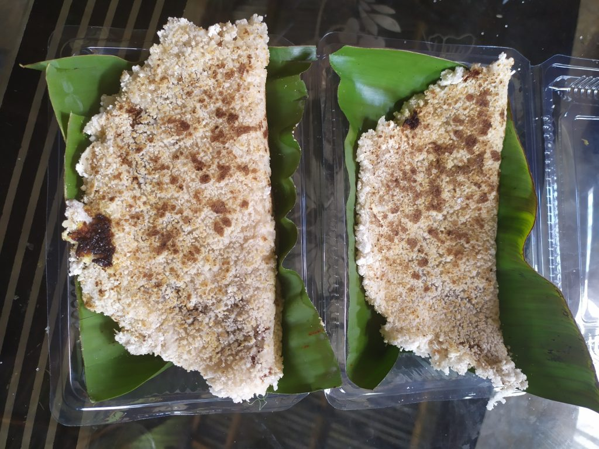

- 
-
Makanan khas Mongondow terbuat dari sagu, gula aren, kelapa parut, garam.
Cara membuatnya cukup mudah seperti halnya dalam pembuatan telur dadar yaitu sagu yang telah dibersihkan dimasukan ke wajan lalu ditaburi gula aren dan dipanaskan diatas api kecil selama 1 menit hingga gulanya mencair.
Proses masak dinangoi dengan tungku kayu dan belanga terbuat dari tanah liat. Rasanya yang guri, manis sehingga jajanan ini cocok disajikan pagi, sore hari bersama keluarga, teman.
Masyarakat di sini menyebutnya dengan pizza khas Mangndow. Makanan ini sudah ada sejak dahulu dan sekarang menjadi warisan secara turun termurun, dahulu dinangoi menjadi makanan para elit kerajaan Mongondow.
Pada masa kemerdekaan, Dinangoi dijadikan sebagai makanan pengganti nasi karena pada saat itu terjadi musim kemarau panjang.
Sekarang dinangoi merupakan salah satu kuliner khas di Mongndow.